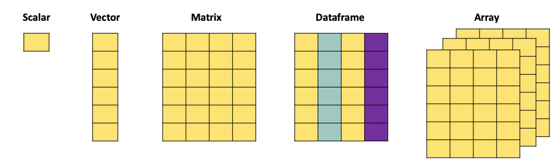

scalar_example <- 4Database Manipulation
In this chapter we look into database manipulation with R. We will use a combination of base-R functions and functions from the tidyverse. From this chapter you are expected to know how to:
Subset a dataframe, matrix or dictionnary (specific to Python)
Filter observations
group observations
Missing data treatment
Data transformations
Text data operations
Regex
gsub()
substr()
Data manipulation with R
Data formats
When working with data, we face different data object types. In practice we will mainly use the following formats:

A scalar is just a numerical value.
When we combine multiple of these values, we can create a vector. The c() function is used to combine different values into a vector:
vector_example <- as.vector(c(4,2,3,1,6))
print(vector_example)[1] 4 2 3 1 6A matrix, just as the mathematical object, is an aggregation of vectors.
matrix_example = matrix(c(1,2,3,4,5,6,7,8,9,10,11,12), nrow = 3, ncol = 4, byrow = T)
print(matrix_example) [,1] [,2] [,3] [,4]
[1,] 1 2 3 4
[2,] 5 6 7 8
[3,] 9 10 11 12A dataframe is the more versatile than a matrix since it can contain different types of data. It also has column names that we can refer to when manipulating the object, and can have row names.
dataframe_example <- data.frame(
Name = c("Alice", "Bob", "Charlie", "David", "Eve"),
Age = c(25, 30, 22, 28, 24),
Gender = c("Female", "Male", "Male", "Male", "Female"),
Subscribed = c(TRUE, FALSE, TRUE, TRUE, FALSE)
)
print(dataframe_example) Name Age Gender Subscribed
1 Alice 25 Female TRUE
2 Bob 30 Male FALSE
3 Charlie 22 Male TRUE
4 David 28 Male TRUE
5 Eve 24 Female FALSE
Selecting rows and columns
The selection of rows and columns can be achieved in two ways in base-R. Either by selecting the name of the column using the $ operator. Or by referencing the column number using [,].
The brackets have as first argument the row number(s) and as second argument the column umber(s). For example if you want to select the first row you would use [1,]. When no argument is supplied (as is the case here for the columns) then all columns are selected. For this reason [1,] gives the first row for all the columns. We can go further and search for the first row and only the first two columns, then we would write [1,c(1,2)].
# select the column by its name: "Name"
dataframe_example$Name[1] "Alice" "Bob" "Charlie" "David" "Eve" # select the column by its index:
dataframe_example[1] Name
1 Alice
2 Bob
3 Charlie
4 David
5 Eve# select the column by its index:
dataframe_example[,1][1] "Alice" "Bob" "Charlie" "David" "Eve" The $ operator only works when the column has a header. Matrices do not have a header and therefor cannot be subsetted with the $ operator, only the [,] method works.
# select the column by its index:
matrix_example[,1][1] 1 5 9# select a row by its index:
matrix_example[1,][1] 1 2 3 4# select multiple rows by their index:
matrix_example[c(1,3),] [,1] [,2] [,3] [,4]
[1,] 1 2 3 4
[2,] 9 10 11 12# select multiple columns by their index:
matrix_example[,c(2,4)] [,1] [,2]
[1,] 2 4
[2,] 6 8
[3,] 10 12Using the tidyverse, we can accomplish similar tasks, often in a more efficient manner (in terms of computation time).
Pay Attention
The functions we expect you to know here are select() and slice().
# Load the tidyverse package
library(tidyverse)── Attaching core tidyverse packages ──────────────────────── tidyverse 2.0.0 ──
✔ dplyr 1.1.4 ✔ readr 2.1.4
✔ forcats 1.0.0 ✔ stringr 1.5.1
✔ ggplot2 3.5.0 ✔ tibble 3.2.1
✔ lubridate 1.9.2 ✔ tidyr 1.3.0
✔ purrr 1.0.2
── Conflicts ────────────────────────────────────────── tidyverse_conflicts() ──
✖ dplyr::filter() masks stats::filter()
✖ dplyr::lag() masks stats::lag()
ℹ Use the conflicted package (<http://conflicted.r-lib.org/>) to force all conflicts to become errors# Create a sample data frame
data <- data.frame(
Pat_num = c("WO200214562", "WO2023738962", "EP2023778962", "FR2019272698", "FR201922671"),
Year = c(2002, 2023, 2023, 2019, 2019),
Domain = c("B60C", "B60C", "B29D", "C08K", "C08K")
)
# Selecting one column
selected_columns <- data %>% select(Pat_num)
print(selected_columns) Pat_num
1 WO200214562
2 WO2023738962
3 EP2023778962
4 FR2019272698
5 FR201922671# Selecting multiple columns
selected_columns <- data %>% select(Pat_num, Year)
print(selected_columns) Pat_num Year
1 WO200214562 2002
2 WO2023738962 2023
3 EP2023778962 2023
4 FR2019272698 2019
5 FR201922671 2019# Selecting rows
Selected_rows <- data %>% slice(1:3)
print(Selected_rows) Pat_num Year Domain
1 WO200214562 2002 B60C
2 WO2023738962 2023 B60C
3 EP2023778962 2023 B29DFiltering your dataframe
We often need to subset datasets to suit specific needs. This means that we want to extract rows and columns from a dataset based on specific conditions. For example, we might want to extract all papers published in a specific year, from authors from a specific university. We need to filter according to specific conditions in the data. In base R we can do this by combining the logic operators (which we discussed in another chapter), and the function subset(). The subset() function requires two arguments, the first is the dataframe you want to subset, the second is the condition used to filter:
data <- data.frame(
Pat_num = c("WO200214562", "WO2023738962", "EP2023778962", "FR2019272698", "FR201922671"),
Year = c(2002, 2023, 2023, 2019, 2019),
Domain = c("B60C", "B60C", "B29D", "C08K", "C08K")
)
# Suppose we want to extract all patents filed in 2023:
pats_2023 <- subset(data, data$Year == 2023)
print(pats_2023) Pat_num Year Domain
2 WO2023738962 2023 B60C
3 EP2023778962 2023 B29D# Suppose we want to extract all patent NOT filed in 2023:
subset = subset(data, !(Year == 2023))
print(subset) Pat_num Year Domain
1 WO200214562 2002 B60C
4 FR2019272698 2019 C08K
5 FR201922671 2019 C08K# We can also combine multiple conditions
pats_2023 <- subset(data, Year == 2023 | Year == 2002 )
print(pats_2023) Pat_num Year Domain
1 WO200214562 2002 B60C
2 WO2023738962 2023 B60C
3 EP2023778962 2023 B29D# We can also combine multiple conditions
subset <- subset(data, Domain != "B60C" & Year >= 2019 )
print(subset) Pat_num Year Domain
3 EP2023778962 2023 B29D
4 FR2019272698 2019 C08K
5 FR201922671 2019 C08KThe same types of operations can be obtained with the tidyverse environment using the select() and filter() functions. Just as base-R, these functions require two arguments, a first with the dataframe, the second with the elements to select:
data <- data.frame(
Pat_num = c("WO200214562", "WO2023738962", "EP2023778962", "FR2019272698", "FR201922671"),
Year = c(2002, 2023, 2023, 2019, 2019),
Domain = c("B60C", "B60C", "B29D", "C08K", "C08K")
)
# extract all patents with domain B60C
selected_columns <- data %>% filter(Domain == "B60C")
print(selected_columns) Pat_num Year Domain
1 WO200214562 2002 B60C
2 WO2023738962 2023 B60C# extract the years of the patents with domain B60C
subset <- data %>% filter(Domain == "B60C") %>% select(Year)
print(subset) Year
1 2002
2 2023# extract the years of the patents NOT with domain B60C
subset <- data %>% filter(!(Domain == "B60C")) %>% select(Year)
print(subset) Year
1 2023
2 2019
3 2019dropping columns and rows
Instead of extracting particular rows and columns, we can also decide to drop rows and columns. In base-R this is achieved with the same functions as for selection, with the addition of a “-” to signify that we want to remove the column or row:
data <- data.frame(
Pat_num = c("WO200214562", "WO2023738962", "EP2023778962", "FR2019272698", "FR201922671"),
Year = c(2002, 2023, 2023, 2019, 2019),
Domain = c("B60C", "B60C", "B29D", "C08K", "C08K")
)
# remove the first column:
matrix_example[,-1] [,1] [,2] [,3]
[1,] 2 3 4
[2,] 6 7 8
[3,] 10 11 12# remove the first row:
matrix_example[-1,] [,1] [,2] [,3] [,4]
[1,] 5 6 7 8
[2,] 9 10 11 12# remove multiple rows by their index:
matrix_example[-c(1,3),][1] 5 6 7 8# remove multiple columns by their index:
matrix_example[,-c(2,4)] [,1] [,2]
[1,] 1 3
[2,] 5 7
[3,] 9 11With the use of the dplyr package:
data <- data.frame(
Pat_num = c("WO200214562", "WO2023738962", "EP2023778962", "FR2019272698", "FR201922671"),
Year = c(2002, 2023, 2023, 2019, 2019),
Domain = c("B60C", "B60C", "B29D", "C08K", "C08K")
)
# Selecting one column
selected_columns <- data %>% select(-Pat_num)
print(selected_columns) Year Domain
1 2002 B60C
2 2023 B60C
3 2023 B29D
4 2019 C08K
5 2019 C08K# Selecting multiple columns
selected_columns <- data %>% select(-Pat_num, -Year)
print(selected_columns) Domain
1 B60C
2 B60C
3 B29D
4 C08K
5 C08K# Equivalent form of the previous operation:
selected_columns <- data %>% select(-c(Pat_num, Year))
print(selected_columns) Domain
1 B60C
2 B60C
3 B29D
4 C08K
5 C08KFurther actions: grouping and summarising
With real data we often need to regroup observations by year, organisation, region, or any other entity. For example if we have a set of scientific publications and we want to know how many publications we have per author per year, we need to regroup the observations in both those dimensions. In R we will do this using the tidyverse which will build upon the dplyr package. Mainly we will focus on three functions, group_by, summarise and reframe.
group_by focuses on grouping observations according to a specific value. We can the compute values based on the created groups. For example, if we have a database with researchers and their publications, if we want to know how many publications each of them has, we would first have to create a subset per researcher, count how many publications he/she has, store this information, then move to the next one and so on. group_by allows us to create these subsets and summarise allows us to compute on these sets:
data <- data.frame(
Pat_num = c("WO200214562", "WO2023738962", "EP2023778962", "FR2019272698", "FR201922671"),
Year = c(2002, 2023, 2023, 2019, 2019),
Domain = c("B60C", "B60C", "B29D", "C08K", "C08K")
)
# want to know in which year the first patent in a domain has been filed, and when the last year of filing was.
# we will group by domain, and then compute the min and max of the years to find the correct dates.
data %>% group_by(Domain) %>% summarise("first_year" = min(Year), "last_year" = max(Year))# A tibble: 3 × 3
Domain first_year last_year
<chr> <dbl> <dbl>
1 B29D 2023 2023
2 B60C 2002 2023
3 C08K 2019 2019# The arguments "first_year" and "last_year" will be the names of the columns we are creating in the resulting dataframe.We now have a dataframe that has one row for each Domain, with the first and last year as second and third columns. summarise can contain any function, ranging from sum, mean to paste. If you want to simply count the number of occurrences within a group, the n() function will compute this:
data <- data.frame(
Pat_num = c("WO200214562", "WO2023738962", "EP2023778962", "FR2019272698", "FR201922671"),
Year = c(2002, 2023, 2023, 2019, 2019),
Domain = c("B60C", "B60C", "B29D", "C08K", "C08K")
)
# want to know in which year the first patent in a domain has been filed, and when the last year of filing was.
# we will group by domain, and then compute the min and max of the years to find the correct dates.
data %>% group_by(Domain) %>% summarise("frequency" = n())# A tibble: 3 × 2
Domain frequency
<chr> <int>
1 B29D 1
2 B60C 2
3 C08K 2Data manipulation with Python
Selecting columns and rows
Just as in R, Python allows for the extraction of columns both by their name and by their index. Locations in dataframes are accessed by the use of [[]], the first argument between brackets will refer to the rows, the second to the columns. If you want to extract all rows for a given column (or simply put, you want to extract a specific column), you would write [[“column_name”]].
import pandas as pd
# Create a sample DataFrame
data = {
'Name': ['Alice', 'Bob', 'Charlie', 'David', 'Eve'],
'Age': [25, 30, 22, 28, 24],
'Gender': ['Female', 'Male', 'Male', 'Male', 'Female']
}
df = pd.DataFrame(data)
# Extracting one Column in Python
selected_columns = df[['Name']]
print(selected_columns) Name
0 Alice
1 Bob
2 Charlie
3 David
4 Eve# Extracting multiple Columns in Python
selected_columns = df[['Name', 'Age']]
print(selected_columns) Name Age
0 Alice 25
1 Bob 30
2 Charlie 22
3 David 28
4 Eve 24Using the index of the columns is also a possibility. For this case we will need to use the .iloc function. .iloc is used when we are addressing a dataframe by the index of the rows and columns, i.e by the number corresponding to the location in the dataframe. We need to provide two arguments for this function, the rows we want to select and the columns we want to select. On the contrary of the previous example, we need to specify rows when we use .iloc. If we want to extract all rows for a given column, we can do so by using :.
If we want to use a combination of both names and indexes, we need to use the .loc function which does not expect numbers as arguments.
import pandas as pd
# Create a sample DataFrame
data = {
'Name': ['Alice', 'Bob', 'Charlie', 'David', 'Eve'],
'Age': [25, 30, 22, 28, 24],
'Gender': ['Female', 'Male', 'Male', 'Male', 'Female']
}
df = pd.DataFrame(data)
# Extracting Columns by Index in Python
# We use ":" in the first argument to specify that we want all rows. We then specify the columns we want (here 0 and 1).
selected_columns = df.iloc[:,[0, 1]]
print(selected_columns) Name Age
0 Alice 25
1 Bob 30
2 Charlie 22
3 David 28
4 Eve 24# If we do not specify which rows we want, Python will
# interpret the numbers as being rows and not columns.
filtered_rows = df.iloc[[0, 4]]
print(filtered_rows) Name Age Gender
0 Alice 25 Female
4 Eve 24 Female# A combination of both is also possible:
row3 = df.loc[0, "Name"]
print(row3)AliceFiltering your dataframe
We will use filtering on a pandas dataframe. As discussed in the chapter about basic operations, the logic operators will change compared to the base logic operators. Mainly: we will use & for and, | for or and ~ for not.
import pandas as pd
# create a small dataframe
data = {
'Pat_num': ["WO200214562", "WO2023738962", "EP2023778962", "FR2019272698", "FR201922671"],
'Year': [2002, 2023, 2023, 2019, 2019],
'Domain': ["B60C", "B60C", "B29D", "C08K", "C08K"]
}
df = pd.DataFrame(data)
# subset the dataframe to extract only patents from 2023
subset = df[df['Year'] == 2023]
print(subset) Pat_num Year Domain
1 WO2023738962 2023 B60C
2 EP2023778962 2023 B29D# subset the dataframe to extract patent in domain "B60C"
# with year >= 2019
subset = df[(df['Year'] >= 2019) & (df['Domain'] == "B60C")]
print(subset) Pat_num Year Domain
1 WO2023738962 2023 B60C# subset the dataframe to extract patent NOT in domain "B60C"
subset = df[~(df['Domain'] == "B60C")]
print(subset) Pat_num Year Domain
2 EP2023778962 2023 B29D
3 FR2019272698 2019 C08K
4 FR201922671 2019 C08KFurther actions: grouping and summarising
With real data we often need to regroup observations by year, organisation, region, or any other entity. For example if we have a set of scientific publications and we want to know how many publications we have per author per year, we need to regroup the observations in both those dimensions. In Python we will do this using the pandas package. Mainly we will focus on four functions, groupby, agg, count and reset_index.
groupby focuses on grouping observations according to a specific value. We can the compute values based on the created groups. For example, if we have a database with researchers and their publications, if we want to know how many publications each of them has, we would first have to create a subset per researcher, count how many publications he/she has, store this information, then move to the next one and so on. groupby allows us to create these subsets and agg allows us to compute on these sets:
import pandas as pd
data = {
'Pat_num': ["WO200214562", "WO2023738962", "EP2023778962", "FR2019272698", "FR201922671"],
'Year': [2002, 2023, 2023, 2019, 2019],
'Domain': ["B60C", "B60C", "B29D", "C08K", "C08K"]
}
df = pd.DataFrame(data)
grouped_set = df.groupby('Domain')['Year'].agg([min, max]).reset_index()
print(grouped_set) Domain min max
0 B29D 2023 2023
1 B60C 2002 2023
2 C08K 2019 2019grouped_set = df.groupby('Domain').count().reset_index()
print(grouped_set) Domain Pat_num Year
0 B29D 1 1
1 B60C 2 2
2 C08K 2 2